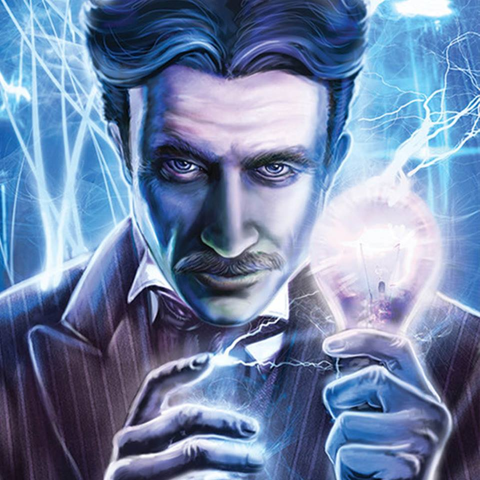

Nikola Tesla
- 1856 - Born in Smiljan, Croatia.
- 1873 - Attended the Polytechnic Institute in Graz, Austria and the University of Prague.
- 1881 - Startes hes career as an electrical engineer at a telephone company in Budapest.
- 1882 - Tesla joines Continental Edison Company in Paris where he designed dynamos.
- 1883 - While in Strasbourg, France, he built a prototype of the induction motor and tested it successfully.
- 1884 - he arrives in New York and works for Thomas Edison.
- 1885 - quits Edison.
- 1891 - developes the Tesla Coil.
- 1895 - designes the first hydroelectric power plant in Niagara Falls.
- 1896 - patents the basic system of radio.
- 1943 - Died in New York, United States.
See in more detail he's incredible life at this Wikipedia Page